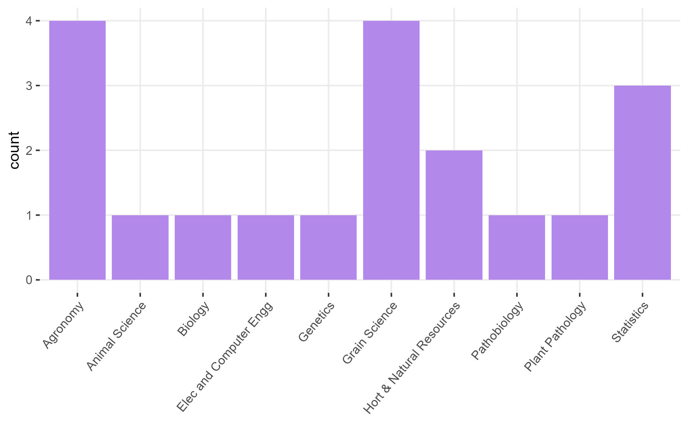

STAT 870 - Analysis of Messy Data
Fall 2026
Day 1 Welcome to STAT 870!
August 24th, 2026
1.1 About this course:
- About me
- About you:

Figure 1.1: Students of this class
- In rounds: What’s your major and what do you expect to learn in 870?
1.1.1 Logistics
- Website
- Syllabus
- Statistical programming requirements
- Rough mindmap of the course (on whiteboard)
- Semester project
- Grades: A (100-89.999999999(!!!)), B (89.99-79.99), C (79.99-69.99), D (69.99-59.99), F (<59.99).
- Attendance policies, kahoots, in-class exercises
1.2 Learning goals
By the end of this course, you should be able to:
- Identify the treatment design, experiment design, experimental unit and observational unit of simple and complex designed experiments.
- Distinguish the benefits/disadvantages of different experiment designs.
- Write the statistical model that corresponds to data generated by designed experiments.
- Write the Materials and Methods section in a paper (or thesis) that describes the designed experiment.

1.4 What advice would you give to future students of this course?
- “As soon as you begin class, start looking for a class project and working on it too, because time flies, and before you know it, the semester is over. Starting your class project early will definitely help you benefit the most from the class as you work on your project concurrently with learning important concepts in class.”
- “don’t skip class”
- “Make sure to take advantage of office hours and read the material in the texts”
1.6 Linear Models review
Perhaps the most common model of all time (default in most software) is
\[y_{i} = \mu_i + \varepsilon_i, \ \varepsilon_i \sim N(0, \sigma^2),\]
where:
- \(y_{i}\) is the observed value for the \(i\)th observation,
- \(\mu_i\) is the expected value for the \(i\)th observation,
- \(\varepsilon_i\) is the residual (i.e., the difference between observed and expected). All residuals are iid normal.
This example uses the model equation form.
The model above can also be written usign the probability distribution form. The probability distribution form is much more flexible because it is compatible with other distributions beyond the normal. It goes like this:
\[y_{i} \sim N(\mu_i, \sigma^2),\] where the elements are the same as described above.
Likewise, we can use the vectorized notation of the probability distribution form, and say that
\[\mathbf{y} \sim N(\boldsymbol\mu, \sigma^2 \mathbf{I}),\] where:
- \(\mathbf{y} \equiv [y_1, y_2, ..., y_n]'\) is the vector of observed values,
- \(\boldsymbol\mu \equiv [\mu_1, \mu_2, ..., \mu_n]'\) is the vector of expected values,
- \(\sigma^2 \mathbf{I}\) is the variance-covariance matrix. Note that, more generally, we can call the variance-covariance matrix \(\boldsymbol{\Sigma}\) or \(\mathbf{V}\).
Note that \[\sigma^2 \mathbf{I} = \sigma^2 \begin{bmatrix} 1 & 0 & 0 & \dots & 0 \\ 0 & 1 & 0 & \dots & 0 \\ 0 & 0 & 1 & \dots & 0 \\ \vdots & \vdots & \vdots & \ddots & \vdots \\ 0 & 0 & 0 & \dots & 1 \end{bmatrix} = \begin{bmatrix} \sigma^2 & 0 & 0 & \dots & 0 \\ 0 & \sigma^2 & 0 & \dots & 0 \\ 0 & 0 & \sigma^2 & \dots & 0 \\ \vdots & \vdots & \vdots & \ddots & \vdots \\ 0 & 0 & 0 & \dots & \sigma^2 \end{bmatrix}.\]
The assumptions behind this model are:
- Normal distribution of the data
- Constant variance
- Independence
- Linearity
In this course, we will mostly deal with cases where:
- The assumption of independence does not hold (basic and complex designed experiments),
- The assumption of normality does not make sense (e.g., data are counts, proportions, or stricly positive),
- The assumption of constant variance does not hold/make sense (e.g., larger biomass is associated to larger variance of said biomass).
We will approach most problems with a 3-step approach (Chapter 2 in Stroup et al.):
- What is the distribution of the data?
- What is the link function?
- What is the blueprint of the design/data?

Figure 1.3: Common variable distributions. Page 60 in Stroup et al. (2024)
1.7 On notation
- scalars: \(y\), \(\sigma\), \(\beta_0\)
- vectors: \(\mathbf{y} \equiv [y_1, y_2, ..., y_n]'\), \(\boldsymbol{\beta} \equiv [\beta_1, \beta_2, ..., \beta_p]'\), \(\boldsymbol{u}\)
- matrices: \(\mathbf{X}\), \(\Sigma\)
- probability distribution: \(y \sim N(0, \sigma^2)\), \(\mathbf{y} \sim N(\boldsymbol{0}, \sigma^2\mathbf{I})\).
1.9 Homework & Announcements
- Install R and RStudio.
- Submit Assignment 1 by next Monday.
- Read Chapter 2 in Stroup et al. (2024)
- Chapter 4 in Messy Data Vol1 (Milliken & Johnson)